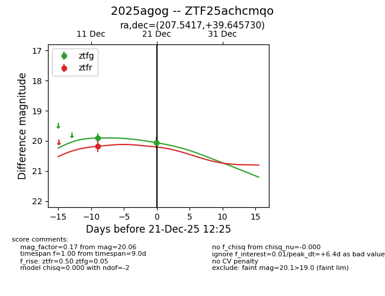
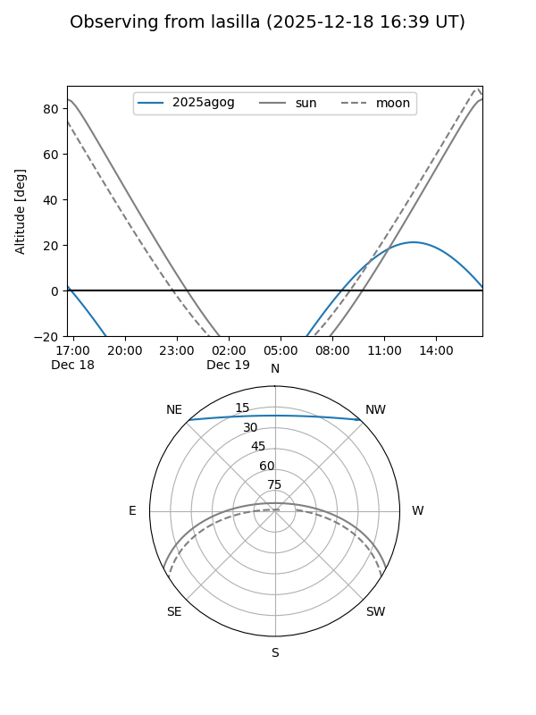
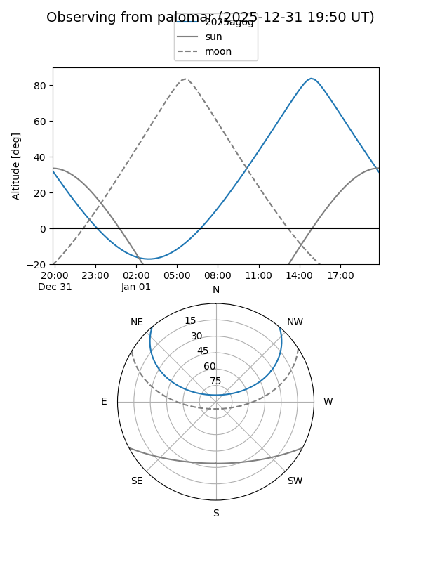

2025agog
Target 2025agog at 2025-12-31 16:59
Aliases and brokers:
FINK:
Lasair:
ALeRCE:
TNS:
YSE:
alt names
ZTF25achcmqo (ztf,fink_ztf)
2025agog (tns,yse)
Coordinates:
equatorial (ra, dec) = 207.5417,+39.64573
equatorial (HMS+DMS) = 13:50:10.02,+39:38:44.63
galactic (l, b) = (82.3941,+72.52585)
Flags:
Photometry:
last ztfg=20.06, ztfr=20.18
2 ztfg, 1 ztfr detections
Lightcurve

Visibility


Additional plots